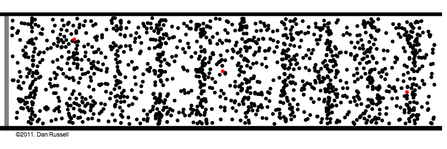

Physiquement, le son est une vibration mécanique de
l'air (ou plus généralement de tout autre fluide) qui se propage sous
forme d'ondes longitudinales.

Illustration de la propagation d'une onde
L'oreille humaine (ou celle du kangourou commun, mais ce n'est pas
tellement le propos) mesure les variations de pressions à l'entrée du
canal auditif.
Illustration du fonctionnement d'une oreille
Représentation d'une onde sonore
Une façon intuitive de représenter une onde sonore est de tracer les variations de pressions qu'elle engendre à un point x en fonction du temps :
Représentation d'une onde sonore
Étudier un son va donc revenir à étudier une fonction / un signal (ce que l'on sait un peu faire, normalement).
Caractéristiques
Un son possède plusieurs caractéristiques () que notre oreille peut déceler :
sa direction d'origine : vous savez dire si quelqu'un parle devant vous ou dans votre dos (mais on est d'accords, ça se fait trop pas) Ceci
est dû au fait que nous avons (si tout va bien) deux oreilles, qui
captent les sons à des positions (encore une fois si tout va bien)
légèrement différentes. Notre cerveau est alors capable de spatialiser
le son.
son intensité : vous savez dire si quelqu'un parle fort ou doucement. Concrètement,
l'onde sonore déplace plus ou moins les particules d'air, ce qui se
traduit par des variations de pressions plus ou moins importantes.Un son doux (à gauche) et fort (à droite)
sa hauteur : vous savez dire si quelqu'un a une voix grave ou aigue Ceci
est lié à la fréquence de vibration de l'onde sonore : plus cette
vibration est lente, plus le son est perçu comme grave (et inversement).
Un son grave (à gauche) et aigu (à droite)
(Note : j'utilise "vitesse de vibration" pour ne pas parler de "fréquence", que l'on réservera à des ondes sonores périodiques)
son timbre : vous savez distinguer plusieurs voix Cela est lié à la forme de l'onde sonore : son enveloppe, ses harmoniques...
Son musicaux
Il existe des sons bien particuliers : les sons "musicaux". Un
instrument de musique (ou une voix chantée) sonne bien différemment d'un
marteau-piqueur.
Cela vient du fait qu'un instrument de musique produit des sons périodiques, contrairement aux sons ordinaires qui sont apériodiques:
Onde sonore d'un violon (à gauche) et d'un marteau-piqueur (à droite)
Analyse de Fourier
L'analyse de Fourier est une branche des mathématiques qui consiste à
étudier la décomposition de fonctions en sinusoïdes. Pourquoi des
sinusoïdes ? Parce que ce sont les seuls signaux qui, donnés en entrée
d'un système linéaire, engendrent une sortie
sinusoïdale de même fréquence que la sinusoïde d'entrée. La
décomposition de Fourier permet donc de faciliter l'étude de beaucoup de
systèmes physiques.
Ces techniques diffèrent suivant si la fonction est continue ou discrète, périodique ou apériodique :
la fonction est continue et périodique : on peut (sous certaines conditions) la décomposer en série de Fourier (Fourier Series en anglais)
la fonction est continue et apériodique : on peut peut (sous certaines conditions) généraliser la démarche précédente et calculer sa transformée de Fourier (Fourier Transform en anglais)
la fonction est discrète et périodique : on peut calculer sa transformée de Fourier discrète (Discrete Fourier Transform en anglais)
la fonction est discrète et apériodique : on peut généraliser la démarche précédente et calculer sa transformée de Fourier à temps discret (Discrete Time Fourier Transform en anglais)
Pour la suite, ce qui nous intéresse avant tout est la troisième
famille : les signaux discrets et périodiques. En effet, nous
travaillerons sur ordinateur, où les signaux sont forcément discrétisés
et finis. Nous considérerons que ces signaux finis sont en fait une
période d'un signal discret infini hypothétique.
Séries de Fourier
L'introduction précédente justifie la volonté de trouver une
décomposition en somme de sinusoïdes. Donnons ici quelques intuitions.
On se place ici dans le cas d'une fonction f:R→R, T-périodique (donc de fréquence).
On pose ω=T2π, ce qui nous permet de considérer les fonctions trigonométriques de période T : t↦cos(ωt) et t↦sin(ωt).
Notre fonction étant T-périodique, on va essayer de la décomposer en sommes de sinusoïdes de pulsations multiples de ω, c'est à dire trouver une décomposition telle que :
f(t)=n=0∑+∞ancos(nωt)+bnsin(nωt)
Supposons qu'une telle décomposition existe et essayons de trouver des contraintes sur les coefficients.
En prenant l'intégrale sur une période il vient :
∫0Tf(t)dt=∫0T(n=0∑+∞ancos(nωt)+bnsin(nωt))dt
Supposons que l'on puisse intervertir l'intégrale et la somme :
cn=⎩⎨⎧a02an−i2bnc−n pour n=0 pour n>0 pour n<0
Transformée de Fourier
Transformée de Fourier à Court Terme (STFT)
Séparation de sources
La séparation de sources est un des problèmes majeurs en traitement
du son. Le but est d'essayer d'extraire les sons qui composent un
mélange sonore (par exemple : extraire la partie "batterie" d'un morceau
de musique).
Notre cerveau est capable d'effectuer cette opération, même dans des
conditions assez mauvaises : nous sommes par exemple capable de nous
focaliser sur la voix d'une personne dans le brouhaha d'un restaurant.
Cependant, cette prouesse est rendue possible par un apprentissage très
long des nombreux sons qui nous entourent, et de leurs caractéristiques.
Ces connaissances sont souvent difficilement traduisibles
informatiquement, ce qui rend la tâche complexe pour un ordinateur.
Nous allons ici voir quelques techniques de séparation de source (qui ne font pas intervenir de deep learning).
Harmonic / Percussive Source Separation (HPSS)
La séparation harmonique / percussive consiste - comme son nom
l'indique - à séparer un morceau de musiques en deux composantes :
une composante harmonique, correspondant aux parties mélodiques du morceau : voix, guitare, piano, basse...
une composante percussive, correspondant aux percussions présentes dans le morceau : caisse claire, grosse caisse, cymbales...
Cette méthode est basée sur les constats suivants :
un son harmonique varie peu au cours du temps : on observe des lignes horizontales sur son spectrogramme
un son percussif est bref dans le temps, mais riche en fréquences : on observe des lignes verticales sur son spectrogramme
Spectrogrammes d'un son de violon (à gauche), d'un son de batterie (au milieu) et de leur superposition (à droite)
Notre but est d'essayer de retrouver ces deux composantes à partir de leur mélange :
Spectrogramme de la superposition d'un son de violon et d'un son de batterie
Voyons comment procéder.
Dans un premier temps, on renforce les composantes horizontales /
harmoniques (resp. verticales / percussives) en appliquant un filtre
médian sur les colonnes (resp. sur les lignes) :
Spectrogramme filtré avec un filtre médian sur les lignes (à gauche) et sur les colonnes (à droite)
À partir de ces filtrages, on peut créer deux masques binaires correspondants aux parties harmoniques et percussives :
Enfin, on peut appliquer ces masques sur le spectrogramme de départ pour récupérer nos deux composantes :
Composantes harmonique et percussive
Résultats
Morceau
Original
Harmonique
Percussive
Billie Jean - Michael Jackson
Extensions
Applications
Les résultats obtenus par cet algorithme ne sont pas exploitables
tels quels. Cependant, on peut les utiliser dans les applications
suivantes :
Retoucher le "mixage" d'un morceau
Retranscrire une partition : la partie percussive peut alors être
mise de côté le temps de détecter les notes qui composent le morceau
À l'inverse, pour détecter le tempo d'un morceau, on peut mettre de côté la composante harmonique
2D Fourier Transform (2DFT)
Nous allons voir ici une méthode permettant de séparer la voix d'un accompagnement musical.
Cette méthode est basée sur le constat suivant : l'accompagnement
musical d'un morceau de musique est souvent répétitif (boucles), tandis
que le chant ne l'est pas. Cela peut se vérifier sur le spectrogramme
suivant :
Spectrogramme d'un extrait de Billie Jean, de Michael Jackson
L'idée est d'alors d'isoler les composantes qui se répètent dans un
spectrogramme (qui doivent logiquement faire partie de l'accompagnement
musical).
Une manière élégante d'y parvenir est de prendre la transformée de Fourier 2D de ce spectrogramme X(s,r):=FT2D{X(f,t)}. En effet, la transformée de Fourier permet d'identifier les composantes périodiques d'un signal :
Transformée de Fourier 2D du module du spectrogramme précédent
Les pics de X correspondent donc aux composantes répétitives du morceau. Il suffit alors d'identifier ces pics.
Une manière d'y arriver est de comparer l'écart entre le maximum et le minimum du module de cette transformée sur un voisinage V(c)=(vx,vy)) avec un seuil γ.
Autrement dit, soit :
α(s,r)=V(s,r)max∣X(s′,r′)∣−V(s,r)min∣X(s′,r′)∣
On construit un masque d'arrière-plan tel que :
Mbg(s,r)={10si α(s,r)>γ et ∣X(s,r)∣=maxV(s,r)∣X(s′,r′)∣sinon
Puis un masque d'avant-plan :
Mfg=1−Mbg
Ces masques, appliqués à X permettent de séparer cette transformée :
Séparation de X
En appliquant la transformée inverse, on se retrouve avec deux "presque-spectrogrammes", Xbg et Xfg correspondant à l'arrière-plan et à l'avant-plan :
"Presque-spectrogrammes" séparés
Cependant, ces "presque-spectrogrammes" contiennent "trop"
d'informations par rapport à ce que nous voulons. Nous les utilisons
pour construire deux nouveaux masques que l'on appliquera au
spectrogramme X :
Mbg(f,t)={10si Xbg(f,t)>Xfg(f,t)sinon
Mfg=1−Mbg
On les applique à X pour obtenir les deux spectrogrammes finaux :